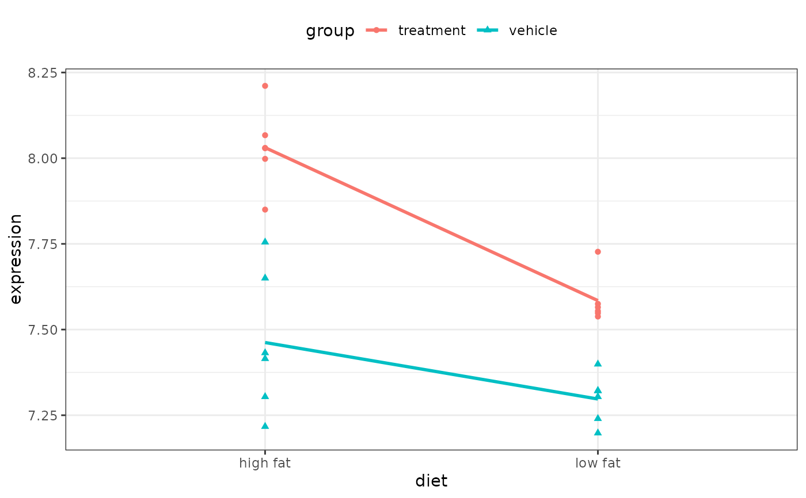

This function computes one or more contrasts of the estimated regression coefficients in a fit from one of the functions in Design, along with standard errors, confidence limits, t or Z statistics, P-values.
Usage
# S3 method for class 'lm'
contrast(fit, ...)
# S3 method for class 'gls'
contrast(fit, ...)
# S3 method for class 'lme'
contrast(fit, ...)
# S3 method for class 'geese'
contrast(fit, ...)
contrast_calc(
fit,
a,
b,
cnames = NULL,
type = c("individual", "average"),
weights = "equal",
conf.int = 0.95,
fcType = "simple",
fcFunc = I,
covType = NULL,
...,
env = parent.frame(2)
)Arguments
- fit
A fit of class
lm,glm, etc.- ...
For
contrast(), these pass arguments tocontrast_calc(). Forcontrast_calc(), they are not used.- a, b
Lists containing conditions for all predictors in the model that will be contrasted to form the hypothesis
H0: a = b. Thegendatafunction will generate the necessary combinations and default values for unspecified predictors. See examples below.- cnames
A vector of character strings naming the contrasts when
type = "individual". Usuallycnamesis not necessary as the function tries to name the contrasts by examining which predictors are varying consistently in the two lists.cnameswill be needed when you contrast "non-comparable" settings, e.g., you comparelist(treat = "drug", age = c(20,30))withlist(treat = "placebo", age = c(40,50).- type
A character string. Set
type="average"to average the individual contrasts (e.g., to obtain a "Type II" or "Type III" contrast).- weights
A numeric vector, used when
type = "average", to obtain weighted contrasts.- conf.int
The confidence level for confidence intervals for the contrasts.
- fcType
A character string: "simple", "log" or "signed".
- fcFunc
A function to transform the numerator and denominator of fold changes.
- covType
A string matching the method for estimating the covariance matrix. The default value produces the typical estimate. See
sandwich::vcovHC()for options.- env
An environment in which evaluate fit.
Value
a list of class contrast.Design containing the elements
Contrast, SE, Z, var, df.residual Lower, Upper, Pvalue, X,
cnames, and foldChange, which denote the contrast estimates, standard
errors, Z or t-statistics, variance matrix, residual degrees of freedom
(this is NULL if the model was not ols), lower and upper confidence
limits, 2-sided P-value, design matrix, and contrast names (or NULL).
Details
These functions mirror rms::contrast.rms() but have fewer options.
There are some between-package inconsistencies regarding degrees of freedom in some models. See the package vignette for more details.
Fold changes are calculated for each hypothesis. When fcType ="simple", the
ratio of the a group predictions over the b
group predictions are used. When fcType = "signed", the ratio is used
if it is greater than 1; otherwise the negative inverse (e.g.,
-1/ratio) is returned.
Examples
library(nlme)
Orthodont2 <- Orthodont
Orthodont2$newAge <- Orthodont$age - 11
fm1Orth.lme2 <- lme(distance ~ Sex * newAge,
data = Orthodont2,
random = ~ newAge | Subject
)
summary(fm1Orth.lme2)
#> Linear mixed-effects model fit by REML
#> Data: Orthodont2
#> AIC BIC logLik
#> 448.5817 469.7368 -216.2908
#>
#> Random effects:
#> Formula: ~newAge | Subject
#> Structure: General positive-definite, Log-Cholesky parametrization
#> StdDev Corr
#> (Intercept) 1.8303267 (Intr)
#> newAge 0.1803454 0.206
#> Residual 1.3100397
#>
#> Fixed effects: distance ~ Sex * newAge
#> Value Std.Error DF t-value p-value
#> (Intercept) 24.968750 0.4860007 79 51.37595 0.0000
#> SexFemale -2.321023 0.7614168 25 -3.04829 0.0054
#> newAge 0.784375 0.0859995 79 9.12069 0.0000
#> SexFemale:newAge -0.304830 0.1347353 79 -2.26243 0.0264
#> Correlation:
#> (Intr) SexFml newAge
#> SexFemale -0.638
#> newAge 0.102 -0.065
#> SexFemale:newAge -0.065 0.102 -0.638
#>
#> Standardized Within-Group Residuals:
#> Min Q1 Med Q3 Max
#> -3.168078360 -0.385939110 0.007103933 0.445154649 3.849463301
#>
#> Number of Observations: 108
#> Number of Groups: 27
contrast(fm1Orth.lme2,
a = list(Sex = levels(Orthodont2$Sex), newAge = 8 - 11),
b = list(Sex = levels(Orthodont2$Sex), newAge = 10 - 11)
)
#> lme model parameter contrast
#>
#> Contrast S.E. Lower Upper t df Pr(>|t|)
#> -1.5687500 0.1719990 -1.922989 -1.2145114 -9.12 25 0e+00
#> -0.9590909 0.2074386 -1.386319 -0.5318631 -4.62 25 1e-04
# ---------------------------------------------------------------------------
anova_model <- lm(expression ~ diet * group, data = two_factor_crossed)
anova(anova_model)
#> Analysis of Variance Table
#>
#> Response: expression
#> Df Sum Sq Mean Sq F value Pr(>F)
#> diet 1 0.56029 0.56029 34.2949 9.944e-06 ***
#> group 1 1.09868 1.09868 67.2494 7.934e-08 ***
#> diet:group 1 0.11886 0.11886 7.2756 0.01386 *
#> Residuals 20 0.32675 0.01634
#> ---
#> Signif. codes: 0 ‘***’ 0.001 ‘**’ 0.01 ‘*’ 0.05 ‘.’ 0.1 ‘ ’ 1
library(ggplot2)
theme_set(theme_bw() + theme(legend.position = "top"))
ggplot(two_factor_crossed) +
aes(x = diet, y = expression, col = group, shape = group) +
geom_point() +
geom_smooth(aes(group = group), method = lm, se = FALSE)
#> `geom_smooth()` using formula = 'y ~ x'

int_model <- lm(expression ~ diet * group, data = two_factor_crossed)
main_effects <- lm(expression ~ diet + group, data = two_factor_crossed)
# Interaction effect is probably real:
anova(main_effects, int_model)
#> Analysis of Variance Table
#>
#> Model 1: expression ~ diet + group
#> Model 2: expression ~ diet * group
#> Res.Df RSS Df Sum of Sq F Pr(>F)
#> 1 21 0.44561
#> 2 20 0.32675 1 0.11886 7.2756 0.01386 *
#> ---
#> Signif. codes: 0 ‘***’ 0.001 ‘**’ 0.01 ‘*’ 0.05 ‘.’ 0.1 ‘ ’ 1
# Test treatment in low fat diet:
veh_group <- list(diet = "low fat", group = "vehicle")
trt_group <- list(diet = "low fat", group = "treatment")
contrast(int_model, veh_group, trt_group)
#> lm model parameter contrast
#>
#> Contrast S.E. Lower Upper t df Pr(>|t|)
#> -0.2871667 0.07379549 -0.4411014 -0.133232 -3.89 20 9e-04
# ---------------------------------------------------------------------------
car_mod <- lm(mpg ~ am + wt, data = mtcars)
print(summary(car_mod), digits = 5)
#>
#> Call:
#> lm(formula = mpg ~ am + wt, data = mtcars)
#>
#> Residuals:
#> Min 1Q Median 3Q Max
#> -4.52952 -2.36190 -0.13172 1.40252 6.87825
#>
#> Coefficients:
#> Estimate Std. Error t value Pr(>|t|)
#> (Intercept) 37.321551 3.054638 12.2180 5.843e-13 ***
#> am -0.023615 1.545645 -0.0153 0.9879
#> wt -5.352811 0.788244 -6.7908 1.867e-07 ***
#> ---
#> Signif. codes: 0 ‘***’ 0.001 ‘**’ 0.01 ‘*’ 0.05 ‘.’ 0.1 ‘ ’ 1
#>
#> Residual standard error: 3.0979 on 29 degrees of freedom
#> Multiple R-squared: 0.75283, Adjusted R-squared: 0.73579
#> F-statistic: 44.165 on 2 and 29 DF, p-value: 1.5788e-09
#>
mean_wt <- mean(mtcars$wt)
manual_trans <- list(am = 0, wt = mean_wt)
auto_trans <- list(am = 1, wt = mean_wt)
print(contrast(car_mod, manual_trans, auto_trans), digits = 5)
#> lm model parameter contrast
#>
#> Contrast S.E. Lower Upper t df Pr(>|t|)
#> 0.023615 1.5456 -3.1376 3.1848 0.02 29 0.9879